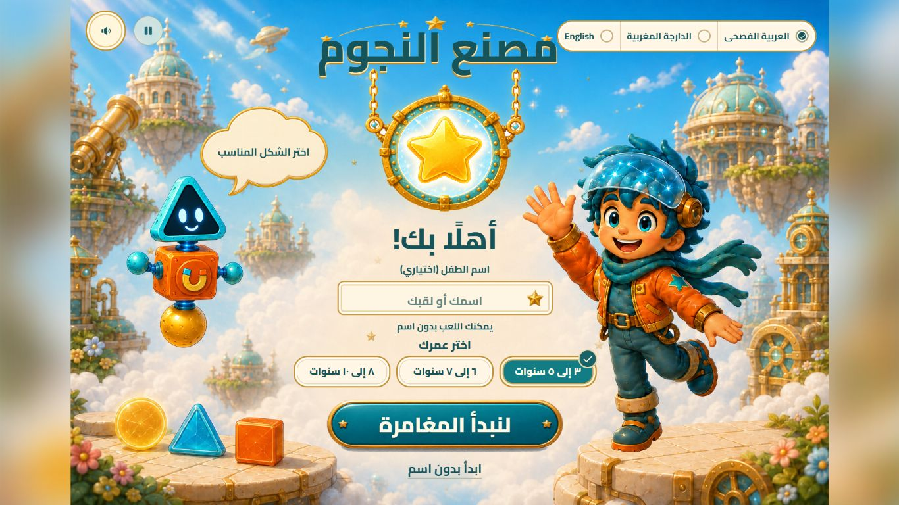

مغامرة تعليمية٣–١٠ سنواتأكسي وبيب
مصنع النجوم
ساعد أكسي وبيب على إضاءة النجوم بحل تحديات الأشكال والعدّ والحساب.
٣–٥ سنوات٦–٧ سنوات٨–١٠ سنوات
- تحديات حسب العمر
- العربية · الدارجة · الإنجليزية
- يمكن اللعب بدون اسم
مباشرة في المتصفح · بدون حساب